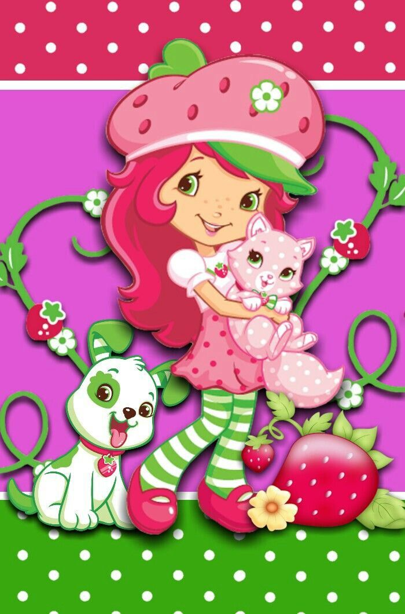

Os primeiros desenhos de Moranguinho e sua gata, Pudim,
foram feitos em 1977 por Muriel Fahrion durante o tempo que foi ilustradora do departamento American Greetings' Juvenile & Humours.
Depois os desenhos foram apresentados para o Sr.
Bernie Loomis da General Mills e foram patenteados.